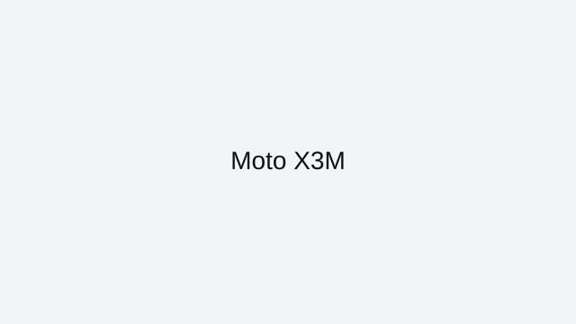

Moto X3M is a browser-friendly bike game on ArcadeZone that plays instantly in your web browser. This page explains the core rules, the best way to approach each session, and how to enjoy Moto X3M without downloads or extra installs.
This browser version of Moto X3M fits the category of racing games that are built for fast playing and repeat sessions. Racing games deliver quick circuits, responsive steering, and easy-to-learn mechanics for instant fun.
Controls are simple enough for quick games and satisfying enough for longer play. Use throttle and steering controls to manage speed and stay on the track. You can play Moto X3M on desktop or mobile, depending on the browser and the page version.
To improve in Moto X3M, focus on the most important idea for the genre: bike games often reward good timing, pattern recognition, and steady progress. This page also includes practical tips that help you find the right pace and avoid common mistakes while playing. If you enjoy bike games, try Road Fury, Drift Hunters, and Burnout Drift next. All of these are listed on the ArcadeZone All Games page for quick access.
ArcadeZone keeps this Moto X3M page clean and easy to use, with a strong focus on playability and helpful guidance. Bookmark this page if you want faster access to Moto X3M and other browser classics from the ArcadeZone collection.
Moto X3M is featured here because it offers a polished browser experience with fast loading and easy access from any modern device.
This page also covers what makes Moto X3M work well online and how to get the most out of every session.
When you want a quick game break, Moto X3M delivers simple play mechanics and satisfying goals without distractions.
Each section on this page is designed to help you understand the controls, learn good strategy, and avoid common mistakes.
What you'll love
Instant browser access with no downloads or installations required.
Get into fast races and tight tracks with responsive browser controls.
A clean, mobile-ready page helps you learn the controls and start playing immediately.
Game essentials
Category: Racing
Game type: Bike
Best for: speed, timing, and track mastery
Controls: steering and speed control on dynamic tracks

Screenshot: Moto X3M
How to play
Use the arrow keys or WASD for steering, and manage speed to stay on the track through each turn.
Tips & Tricks
Smooth steering and controlled acceleration beat aggressive driving in browser races.
Learn the curves and braking points to keep each track clean and fast.
Use the camera, if available, to see the next turn and choose the safest racing line.
Play
If the game embeds elsewhere, link to the source or use an embed iframe with proper attribution.
ArcadeZone provides this page as a guide to Moto X3M. Wherever possible, we link directly to the game’s browser-ready version and credit the original creators. If you want more browser game recommendations, visit the All Games page.